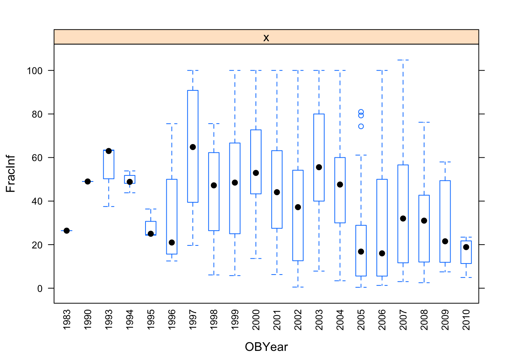

Continuous Outcome Analysis
Ellen Cheng
2019-10-19
Overview
This document will guide you through a few data analysis and model fitting tasks.
Below, I provide commentary and instructions, and you are expected to write all or some of the missing code to perform the steps I describe.
Note that I call the main data variable d. So if you see bits of code with that variable, it is the name of the data. You are welcome to give it different names, then just adjust the code snippets accordingly.
Project setup
We need a variety of different packages, which are loaded here. Install as needed. If you use others, load them here.
Data loading
We will be exploring and fitting a dataset of norovirus outbreaks. You can look at the codebook, which briefly explains the meaning of each variable. If you are curious, you can check some previous papers that we published using (slighly different versions of) this dataset here and here.
Data exploration and cleaning
Investigating the outcome of interest
Let’s assume that our main outcome of interest is the fraction of individuals that become infected in a given outbreak. The data reports that outcome (called RateAll), but we’ll also compute it ourselves so that we can practice creating new variables. To do so, take a look at the data (maybe peek at the Codebook) and decide which of the existing variables you should use to compute the new one. This new outcome variable will be added to the data frame.
# The codebook defines RateAll as:
# Attack rate (i.e. (secondary cases + primary cases/persons at risk)*100) from outbreak. # # I'm assuming that there should be parentheses around 'secondary cases + primary cases'. # # Relevant variables are: Cases1, Cases2, RiskAll?
# Or do I need to divide primary cases by Risk1 and secondary by Risk2?
# Examine Risk1, Risk2, RiskAll to get a better idea of what they are
(data_raw[, c("Risk1", "Risk2", "RiskAll")])## # A tibble: 1,022 x 3
## Risk1 Risk2 RiskAll
## <dbl> <dbl> <dbl>
## 1 0 NA 0
## 2 108 NA 108
## 3 130 NA 130
## 4 4 NA 4
## 5 25 NA 25
## 6 8 NA 8
## 7 48 NA 48
## 8 12 NA 12
## 9 220 NA 220
## 10 71.4 NA 71.4
## # … with 1,012 more rows# It looks like Risk2 is almost all NA's
# Check the number of times they sum 'correctly'--this took a bit of trial-and-error.
# Because of the NA's in Risk2, I found I couldn't simply use 'Risk1 + Risk2' and had to use 'sum(...na.rm = TRUE)' instead.
# Then discovered after Googling that I also had to include the 'rowwise()' function so dplyr would sum row-by-row
match_vec <- data_raw %>%
rowwise() %>%
dplyr::mutate(MatchRisk = sum(Risk1, Risk2, na.rm = TRUE) == RiskAll) %>% # had to use 'sum' to deal with the NA's
ungroup() %>% # to negate rowwise()
pull(MatchRisk)
table(match_vec, useNA = "always") ## match_vec
## TRUE <NA>
## 902 120# TRUE = 902 and NA = 120. That adds up correctly to the 1022 data records.
# Here, NA = 120 is the number of records in which both Risk1 and Risk2 are NA??
# Let's check...
(data_raw %>%
filter(is.na(Risk1) & is.na(Risk2)) %>%
select(Risk1, Risk2, RiskAll)) # hmmm...nothing## # A tibble: 0 x 3
## # … with 3 variables: Risk1 <dbl>, Risk2 <dbl>, RiskAll <dbl>## # A tibble: 120 x 3
## Risk1 Risk2 RiskAll
## <dbl> <dbl> <dbl>
## 1 0 NA NA
## 2 0 NA NA
## 3 0 NA NA
## 4 0 NA NA
## 5 0 NA NA
## 6 0 NA NA
## 7 0 NA NA
## 8 0 NA NA
## 9 0 NA NA
## 10 0 NA NA
## # … with 110 more rows# Oh, so these are all records in which Risk1 = 0 and Risk2 = NA
# Now to the task at hand, which is to manually calculate RateAll as a variable called 'fracinf'.
# Just to stick with the capitalization format used in t data_raw, I'll call it 'FracInf'
d <- data_raw %>%
dplyr::mutate(FracInf = ((Cases1 + Cases2)/RiskAll) * 100)
# Note that there will be some funny results when RiskAll is NA
(d %>% select(Cases1, Cases2, Risk1, Risk2, RiskAll, FracInf, RateAll)) ## # A tibble: 1,022 x 7
## Cases1 Cases2 Risk1 Risk2 RiskAll FracInf RateAll
## <dbl> <dbl> <dbl> <dbl> <dbl> <dbl> <dbl>
## 1 15 NA 0 NA 0 NA 0
## 2 43 22 108 NA 108 60.2 39.8
## 3 27 NA 130 NA 130 NA 20.8
## 4 4 NA 4 NA 4 NA 100
## 5 15 NA 25 NA 25 NA 60
## 6 6 NA 8 NA 8 NA 75
## 7 40 NA 48 NA 48 NA 83.3
## 8 10 NA 12 NA 12 NA 83.3
## 9 116 NA 220 NA 220 NA 54.2
## 10 45 NA 71.4 NA 71.4 NA 63
## # … with 1,012 more rows# WHOOPS! Clearly I did that wrong.
# So it looks like the equation should be: ((Cases1/Risk1) + (Cases2/Risk2)) * 100.
# I guess that makes more sense anyway. Try again...
d <- data_raw %>%
rowwise() %>%
dplyr::mutate(FracInf = sum(Cases1/Risk1, Cases2/Risk2, na.rm = TRUE) * 100) %>%
ungroup()
(d %>% select(Cases1, Cases2, Risk1, Risk2, RiskAll, FracInf, RateAll))## # A tibble: 1,022 x 7
## Cases1 Cases2 Risk1 Risk2 RiskAll FracInf RateAll
## <dbl> <dbl> <dbl> <dbl> <dbl> <dbl> <dbl>
## 1 15 NA 0 NA 0 Inf 0
## 2 43 22 108 NA 108 39.8 39.8
## 3 27 NA 130 NA 130 20.8 20.8
## 4 4 NA 4 NA 4 100 100
## 5 15 NA 25 NA 25 60 60
## 6 6 NA 8 NA 8 75 75
## 7 40 NA 48 NA 48 83.3 83.3
## 8 10 NA 12 NA 12 83.3 83.3
## 9 116 NA 220 NA 220 52.7 54.2
## 10 45 NA 71.4 NA 71.4 63.0 63
## # … with 1,012 more rowsFrom here on, I’m using these yellow text boxes to highlight specific findings.
Okay, pretty good match! Issues:
when ‘RateAll’ = 0, FracInf’ = Inf (this occurs when Risk1 and Risk2 are either 0 or NA and nothing else. SO THERE ARE ACTUALLY CASES, BUT JUST NO RISK)
when ‘RateAll’ = NA, ‘FracInf’ = Inf (this also occurs when Risk1 and Risk2 are either 0 or NA and nothing else. AGAIN, THERE ARE ACTUALLY CASES, BUT JUST NO RISK. Not sure why RateAll is NA in these cases, instead of 0–but I do note that RiskAll is NA in these cases, whereas it was 0 in the other cases. SO THE RATEALL CALC MUST BE USING RISKALL INSTEAD OF HOW I CALCULATED IT FROM RISK1 AND RISK2??)
when ‘RateAll’ = NA, ‘FracInf’ = 0 (this occurs when Cases1 = Cases2 = NA. Well that’s weird, not sure why those records are even in there. I SHOULD NOT USE THESE RECORDS)
- when ‘RateAll’ is a number and ‘FracInf’ = Inf (this occurs when Risk1 and Risk2 are either 0 or NA and nothing else. I don’t understand how they got a value for RateAll in these cases–maybe manually entered instead of using the data)
From here on, I’m using these blue text boxes to summarize general discoveries and ‘notes to self’.
A few notes summarizing we know so far:
In the codebook, ‘RateAll’ is defined as: Attack rate (i.e. (secondary cases + primary cases/persons at risk) X 100). I found that a bit confusing as written. I tested a couple approaches, and it seems that the equation is: Attack rate = ((primary cases/primary risk) + (secondary cases/secondary risk)) X 100
Even if I got the equation correct (which I’m hoping I did), we see some discrepancies between ‘FracInf’ (my calculation) and ‘RateAll’. These seem to stem primarily from records where there were no cases (these should be removed) or there were cases but zero risk (not sure what to do with these).
I noted that another way to calculate ‘FracInf’ would be as ‘CasesAll/RiskAll’, but when I did that I got a different answer from ‘RateAll’ sometimes. Specifically, when Cases1, Cases2, and Risk1 all have numbers but Risk2 = NA, then my ‘FracInc’ matched the reported ‘RateAll’, but if I had calculated it as ‘(CasesAll/RiskAll) * 100’ I would have gotten a number different from the ‘RateAll’.
- Notes for future reference: 1) when summing values with ‘+’, if one of the values is NA the sum will be NA. Therefore, use ‘sum(…, na.rm = TRUE); 2) in dplyr, when trying to create a new variable by summing existing variables, use the function ’rowwise()’ to make sure it sums row-by-row. There also seems to be a ‘rowSums’ function, but it only seems to work under certain conditions; 3) these colored text boxes are really cool, keep this in mind for future work.
Use both text summaries and plots to take a look at the new variable you created to see if everything looks ok or if we need further cleaning.
d_select <- d %>% select(Cases1, Cases2, Risk1, Risk2, RiskAll, FracInf, RateAll) # Focus on these columns for now
summary(d_select)## Cases1 Cases2 Risk1 Risk2
## Min. : 1.0 Min. : 1.00 Min. : 0.00 Min. : 66.00
## 1st Qu.: 9.0 1st Qu.: 4.25 1st Qu.: 0.00 1st Qu.: 72.25
## Median : 26.0 Median : 10.50 Median : 10.00 Median : 82.00
## Mean : 125.2 Mean : 53.02 Mean : 374.57 Mean :135.06
## 3rd Qu.: 64.5 3rd Qu.: 26.75 3rd Qu.: 95.75 3rd Qu.:210.59
## Max. :32150.0 Max. :1113.00 Max. :35000.00 Max. :258.00
## NA's :7 NA's :976 NA's :1014
## RiskAll FracInf RateAll
## Min. : 0.0 Min. : 0.00 Min. : 0.00
## 1st Qu.: 0.0 1st Qu.:31.33 1st Qu.: 0.00
## Median : 22.5 Median :76.92 Median : 15.28
## Mean : 425.6 Mean : Inf Mean : 26.65
## 3rd Qu.: 119.5 3rd Qu.: Inf 3rd Qu.: 48.91
## Max. :35000.0 Max. : Inf Max. :105.00
## NA's :120 NA's :108# Table of oddities. These are cases where either/or/both 'RateAll' and 'FracInf' have NA, Inf, or 0
d_select %>%
dplyr::mutate(FracInf_categ = ifelse(is.na(FracInf), "NA", ifelse(is.infinite(FracInf), "Inf", ifelse(FracInf == 0, "0", "number"))),
RateAll_categ = ifelse(is.na(RateAll), "NA", ifelse(is.infinite(RateAll), "Inf", ifelse(RateAll == 0, "0", "number")))) %>%
select(FracInf_categ, RateAll_categ) %>%
table()## RateAll_categ
## FracInf_categ 0 NA number
## 0 0 7 0
## Inf 323 101 12
## number 0 0 579# It looks like there are 579 cases where both variables actually have a number that is not zero.
# looked at those 579 cases and the numbers are pretty close except in one case (see note in yellow box below).
# Density histograms of 'FracInf' and RateAll'. Convert to long format.
d_select %>%
select(FracInf, RateAll) %>%
gather() %>%
ggplot() +
geom_density(aes(value, color = key))# Got a warning: Removed 544 rows containing non-finite values (stat_density).
# Let's try it with just the records where both variables actually have a number, so it's a more fair comparison
(d_select_compl <- d_select %>%
select(FracInf, RateAll) %>%
filter(!is.na(FracInf) & !is.na(RateAll)) %>%
filter(is.finite(FracInf) & is.finite(RateAll)) %>%
gather()) # save this in a variable for later summaries## # A tibble: 1,158 x 2
## key value
## <chr> <dbl>
## 1 FracInf 39.8
## 2 FracInf 20.8
## 3 FracInf 100
## 4 FracInf 60
## 5 FracInf 75
## 6 FracInf 83.3
## 7 FracInf 83.3
## 8 FracInf 52.7
## 9 FracInf 63.0
## 10 FracInf 37.5
## # … with 1,148 more rows# When we look at only the cases where both have a number reported, the histograms are almost identical and very oddly shaped
# Let's try a violin plot of the data
d_select_compl %>%
ggplot(aes(x = key, y = value, color = key)) +
geom_violin() +
geom_jitter()
# Looks like pop bottles
# We see a string of value = 100 for both variables. And also a value > 100.
(d_select %>%
filter(is.finite(FracInf) & is.finite(RateAll)) %>% # only way to get rid of Inf
filter(FracInf >= 100 | RateAll >= 100))## # A tibble: 38 x 7
## Cases1 Cases2 Risk1 Risk2 RiskAll FracInf RateAll
## <dbl> <dbl> <dbl> <dbl> <dbl> <dbl> <dbl>
## 1 4 NA 4 NA 4 100 100
## 2 2 NA 2 NA 2 100 100
## 3 3 NA 3 NA 3 100 100
## 4 2 NA 2 NA 2 100 100
## 5 5 NA 5 NA 5 100 100
## 6 2 NA 2 NA 2 100 100
## 7 6 NA 6 NA 6 100 100
## 8 3 NA 3 NA 3 100 100
## 9 2 NA 2 NA 2 100 100
## 10 2 NA 2 NA 2 100 100
## # … with 28 more rowsThere is one record where ‘RateAll’ = 1 and ‘FracInf’ = 0.399. In that record, there are only primary cases (‘Cases1’ = 40 and ‘Risk1’ = 10013). It seems ‘RateAll’ is incorrect.
There are 579 records where both ‘RateAll’ and ‘FracInf’ have a number.
There are no records where one variable has zero and the other variable has a number.
- There is an unusual number of records where the rate is 100. In all these cases, Case1 = Risk1 and there are no values for Case2 or Risk2. I wonder if there was a misunderstanding by the people entering the data records–perhaps they thought the number at risk also included the person who actually had the virus (i.e., ‘Risk’ = ‘Cases’ + any one else also at risk from the cases. Otherwise, it seems odd to suddenly see a string of rates equal 100.
- The distribution of data is clearly non-normal and–when only comparing records where both ‘FracInf’ and ‘RateAll’ have numbers–nearly identical for the two variables
We notice there are NAs in this variable and the distribution is not normal. The latter is somewhat expected since our variable is a proportion, so it has to be between 0 and 1. There are also a lot of infinite values. Understand where they come from.
Let’s take a look at the RateAll variable recorded in the dataset and compare it to ours. First, create a plot that lets you quickly see if/how the variables differ.
# Plot one variable on the x axis, the other on the y axis
d_select %>%
ggplot(aes(x = RateAll, y = FracInf)) +
geom_point() +
theme_bw()# also plot the difference of the 2 variables
d_select %>%
dplyr::mutate(Diff = RateAll - FracInf) %>%
ggplot(aes(Diff)) +
geom_histogram() +
labs(title = "Difference Between RateAll and FracInf", x = "RateAll - FracInf") +
theme_bw()# Note when either variable is NA or Inf, the difference is NA or Inf
# make sure you adjust so both are in the same units
# I'M NOT SURE WHAT THE REMINDER ABOVE MEANS...IT SEEMS THEY ARE ALREADY IN THE SAME UNIT?Both ways of plotting the data show that for most outbreaks, the two ways of getting the outcome agree. So that’s good. But we need to look closer and resolve the problem with infinite values above. Check to see what the RateAll variable has for those infinite values.
# Write code that looks at the values of RateAll where we have inifinite values.
# I'm repeating an earlier table, but only for records where FracInf = INF
(d_select %>%
filter(is.infinite(FracInf)) %>%
mutate(RateAll_categ = ifelse(is.na(RateAll), "NA", ifelse(is.infinite(RateAll), "Inf", ifelse(RateAll == 0, "0", "number")))) %>%
count(RateAll_categ))## # A tibble: 3 x 2
## RateAll_categ n
## <chr> <int>
## 1 0 323
## 2 NA 101
## 3 number 12In records where FracInf is INF,
there are 323 cases where ‘RateAll’ is 0
- Dr. Handel said that all ‘RateAll’ values should be 0 where ‘FracInf’ is INF, but I also have 101 cases where ‘RateAll’ is NA and 12 cases where ‘RateAll’ is a number. Hmmm… hope I didn’t do something wrong…
You should find that all of the reported values are 0. So what makes more sense? You should have figured out that the infinite values in our computed variables arise because the RiskAll variable is 0. That variable contains the total number of persons at risk for an outbreak. If nobody is at risk of getting infected, of course, we can’t get any infected. So RateAll being 0 is technically correct. But does it make sense to include “outbreaks” in our analysis where nobody is at risk of getting infected? One should question how those got into the spreadsheet in the first place.
Having to deal with “weirdness” in your data like this example is common. You often need to make a decision based on best judgment.
Here, I think that if nobody is at risk, we shouldn’t include those outbreaks in further analysis. Thus, we’ll go with our computed outcome and remove all observations that have missing or infinite values for the outcome of interest, since those can’t be used for model fitting. Thus, we go ahead and remove any observations that have un-useable values in the outcome.
# Write code that removes all observations that have an outcome that is not very useful, i.e. either NA or infinity. Then look at the outcome variable again to make sure things are fixed. Also check the size of the new dataset to see by how much it shrunk.
dat_temp <- d_select_compl <- d %>%
filter(is.finite(FracInf) & !is.na(FracInf))
dim(dat_temp)## [1] 586 140## # A tibble: 579 x 2
## FracInf RateAll
## <dbl> <dbl>
## 1 39.8 39.8
## 2 20.8 20.8
## 3 100 100
## 4 60 60
## 5 75 75
## 6 83.3 83.3
## 7 83.3 83.3
## 8 52.7 54.2
## 9 63.0 63
## 10 37.5 37.5
## # … with 569 more rows## [1] 579 140When I removed all cases where ‘FracInf’ = INF or NA (there were actually no cases where it was NA, I think, but just in case), I was left with 586 records. When I also removed the 7 records where ‘FracInc’ = 0 (‘RateAll’ = NA in these records), I was left with 579 observations. That matches what Dr. Handel said we should have, so hopefully I’m on the same page with everyone else by now.
You should find that we lost a lot of data, we are down to 579 observations (from a starting 1022). That would be troublesome for most studies if that would mean subjects drop out (that could lead to bias). Here it’s maybe less problematic since each observation is an outbreak collected from the literature. Still, dropping this many could lead to bias if all the ones that had NA or Infinity were somehow systematically different. It would be useful to look into and discuss in a real analysis.
Wrangling the predictors
Not uncommon for real datasets, this one has a lot of variables. Many are not too meaningful for modeling. Our question is what predicts the fraction of those that get infected, i.e., the new outcome we just created. We should first narrow down the predictor variables of interest based on scientific grounds.
For this analysis exercise, we just pick the following variables for further analysis: Action1, CasesAll, Category, Country, Deaths, GG2C4, Hemisphere, Hospitalizations, MeanA1, MeanD1, MeanI1, MedianA1, MedianD1, MedianI1, OBYear, Path1, RiskAll, Season, Setting, Trans1, Vomit. Of course, we also need to keep our outcome of interest.
Note that - as often happens for real data - there are inconsistencies between the codebook and the actual datasheet. Here, names of variables and spelling in the codebook do not fully agree with the data. The above list of variables is based on codebook, and you need to make sure you get the right names from the data when selecting those variables.
dat_temp3 <- dat_temp2 %>%
select(FracInf, Action1, CasesAll, Category, Country, Deaths, gg2c4, Hemisphere, Hospitalizations, MeanA1, MeanD1, MeanI1, MedianA1, MedianD1, MedianI1, OBYear, Path1, RiskAll, season, Setting_1, Trans1, Vomit) %>%
rename(Season = season, GG2C4 = gg2c4)
dim(dat_temp3)## [1] 579 22## [1] "FracInf" "Action1" "CasesAll"
## [4] "Category" "Country" "Deaths"
## [7] "GG2C4" "Hemisphere" "Hospitalizations"
## [10] "MeanA1" "MeanD1" "MeanI1"
## [13] "MedianA1" "MedianD1" "MedianI1"
## [16] "OBYear" "Path1" "RiskAll"
## [19] "Season" "Setting_1" "Trans1"
## [22] "Vomit"Your reduced dataset should contain 579 observations and 22 variables.
With this reduced dataset, we’ll likely still need to perform further cleaning. We can start by looking at missing data. While the summary function gives that information, it is somewhat tedious to pull out. We can just focus on NA for each variable and look at the text output, or for lots of predictors, a graphical view is easier to understand. The latter has the advantage of showing potential clustering of missing values.
# this code prints number of missing for each variable (assuming your dataframe is called d)
print(colSums(is.na(dat_temp3))) ## FracInf Action1 CasesAll Category
## 0 0 0 0
## Country Deaths GG2C4 Hemisphere
## 0 25 400 0
## Hospitalizations MeanA1 MeanD1 MeanI1
## 25 553 0 0
## MedianA1 MedianD1 MedianI1 OBYear
## 541 0 0 0
## Path1 RiskAll Season Setting_1
## 0 0 40 0
## Trans1 Vomit
## 0 1# See my note below--In all cases where GG2C4 is NA, I'm changing them to "No" because the codebook says that if it's no then it's left blank.
# When importing the data, blanks are converted to NA unless otherwise specified.
# For all other variables, blanks really are NA, so I want those to be converted to NA.
unique(dat_temp3$GG2C4) # First, confirm that there are no entries of 'No'## [1] NA "Yes"##
## No Yes
## 400 179# write code to use the visdat R package, add code that plots a heatmap of missing values
vis_miss(dat_temp3, sort_miss = TRUE) # Sorted by missingnessYIKES!! I wonder if I’m working with a different dataset or if I did something wrong. In my data, I also have 400 NA’s for GG2C4 and a small number of NA’s for some of the other variables [UPDATE: I just checked the codebook and it says ‘if no strain in the outbreak is GII.4 then GG2C4 is left blank’. It seems that when I read in the data, these were all converted to NA’s –actually, they should be entered as “No”. For all other variables, when fields were left blank they were truly NA. As a general practice, data forms should not allow blanks that mean something other than NA. For now, I’m converting all NA’s in GG2C4 to ‘No’, so I can do this exercise (I HOPE THIS ASSUMPTION IS CORRECT–IN REAL LIFE, I WOULD CONTACT THE AUTHOR BEFORE MAKING SUCH CHANGES)]
‘visdat’ is a really neat package that does graphics that I have spent a lot of time doing manually in the past–keep in mind for future projects
It looks like we have a lot of missing data for the MeanA1 and MedianA1 variables. If we wanted to keep those variables, we would be left with very few observations. So let’s drop those two variables. After that, we will drop all observations that have missing data (seems to be Hospitalization and Deaths).
# write code to remove the 2 "A1" variables, then drop all remaining observations with NA
dat_temp4 <- dat_temp3 %>%
select(-MeanA1, -MedianA1)
# glimpse(dat_temp4)
# Season, Setting_2, and Vomit also had missing cases
dat_temp5 <- dat_temp4[complete.cases(dat_temp4),]
dim(dat_temp5)## [1] 513 20## FracInf Action1 CasesAll
## Min. : 0.4074 Length:513 Min. : 1.00
## 1st Qu.: 17.7419 Class :character 1st Qu.: 7.00
## Median : 39.2405 Mode :character Median : 20.00
## Mean : 42.1419 Mean : 89.36
## 3rd Qu.: 61.1111 3rd Qu.: 60.00
## Max. :104.7770 Max. :7150.00
## Category Country Deaths
## Length:513 Length:513 Min. :0.00000
## Class :character Class :character 1st Qu.:0.00000
## Mode :character Mode :character Median :0.00000
## Mean :0.07212
## 3rd Qu.:0.00000
## Max. :9.00000
## GG2C4 Hemisphere Hospitalizations MeanD1
## Length:513 Length:513 Min. : 0.0000 Min. : 0.000
## Class :character Class :character 1st Qu.: 0.0000 1st Qu.: 0.000
## Mode :character Mode :character Median : 0.0000 Median : 0.000
## Mean : 0.6959 Mean : 1.954
## 3rd Qu.: 0.0000 3rd Qu.: 0.000
## Max. :99.0000 Max. :96.000
## MeanI1 MedianD1 MedianI1 OBYear
## Min. : 0.0000 Min. : 0.000 Min. : 0.000 Length:513
## 1st Qu.: 0.0000 1st Qu.: 0.000 1st Qu.: 0.000 Class :character
## Median : 0.0000 Median : 0.000 Median : 0.000 Mode :character
## Mean : 0.9259 Mean : 3.462 Mean : 2.277
## 3rd Qu.: 0.0000 3rd Qu.: 0.000 3rd Qu.: 0.000
## Max. :43.0000 Max. :72.000 Max. :65.000
## Path1 RiskAll Season
## Length:513 Min. : 1.0 Length:513
## Class :character 1st Qu.: 23.0 Class :character
## Mode :character Median : 74.0 Mode :character
## Mean : 504.6
## 3rd Qu.: 220.0
## Max. :24000.0
## Setting_1 Trans1 Vomit
## Length:513 Length:513 Min. :0.000
## Class :character Class :character 1st Qu.:0.000
## Mode :character Mode :character Median :1.000
## Mean :0.575
## 3rd Qu.:1.000
## Max. :1.000Let’s now check the format of each variable. Depending on how you loaded the data, some variables might not be in the right format. Make sure everything that should be numeric is numeric/integer, everything that should be a factor is a factor. There should be no variable coded as character. Once all variables have the right format, take a look at the data again.
# write code to format variables as needed
# glimpse(dat_temp4)
# OBYear should be a factor, I think?
# Vomit should be a factor (the only possible values are -1, 0, 1 and they stand for different categories)
# After those changes, all character variables can be converted to factor
# Some of the numeric variables are probably really limited to integers, but I'll keep them as numeric just to be safe
dat_temp5$OBYear <- factor(dat_temp5$OBYear)
dat_temp5$Vomit <- factor(dat_temp5$Vomit)
dat_temp5 <- dat_temp5 %>%
mutate_if(is.character, as.factor)
# glimpse(dat_temp5)
levels(dat_temp5$OBYear) ## [1] "0" "1983" "1990" "1993" "1994" "1995" "1996" "1997" "1998" "1999"
## [11] "2000" "2001" "2002" "2003" "2004" "2005" "2006" "2007" "2008" "2009"
## [21] "2010"Take another look at the data. You should find that for the dataset, most things look reasonable, but the variable Setting_1 has a lot of different levels/values. That many categories, most with only a single entry, will likely not be meaningful for modeling. One option is to drop the variable. But assume we think it’s an important variable to include and we are especially interested in the difference between restaurant settings and other settings. We could then create a new variable that has only two levels, Restaurant and Other.
#write code that creates a new variable called `Setting` based on `Setting_1` buth with only 2 levels, `Restaurant` and `Other`. Then remove the `Setting_1` variable. Note that restaurant is sometimes capitalized and sometimes not. You need to fix that first. For these lines of code, the 'Factor' chapter in R4DS might be helpful here.
levels(dat_temp5$Setting_1)[grep("restaurant", levels(dat_temp5$Setting_1), ignore.case = TRUE)]## [1] "Catering service in Restaurant" "restaurant"
## [3] "Restaurant" "restaurant in Northern Territory"
## [5] "Shared meal at a restaurant" "take-out restaurant"# There are 2 categories that could be considered restaurant
# Convert all others to 'Other'
dat_temp6 <- dat_temp5 %>%
mutate(Setting = ifelse(Setting_1 %in% levels(dat_temp5$Setting_1)[grep("restaurant", levels(dat_temp5$Setting_1), ignore.case = TRUE)], "Restaurant", "Other"))
(dat_temp6[, c("Setting", "Setting_1")])## # A tibble: 513 x 2
## Setting Setting_1
## <chr> <fct>
## 1 Other Boxed lunch, football game
## 2 Other buffet
## 3 Restaurant restaurant
## 4 Other buffet
## 5 Restaurant take-out restaurant
## 6 Other buffet
## 7 Restaurant restaurant
## 8 Other in El Grao de Castello_n
## 9 Other 0
## 10 Other Luncheon and Restaruant
## # … with 503 more rows##
## Other Restaurant
## 404 109I found 6 categories in Setting_1 that occurred in a Restaurant setting, so anything with those categories was reclassified as Restaurant (N = 109) and everything else as Other (N = 404)
Data visualization
Next, let’s create a few plots showing the outcome and the predictors.
#write code that produces plots showing our outcome of interest on the y-axis and each numeric predictor on the x-axis.
# These are the numeric variables
numeric_var <- select_if(dat_final, is.numeric) %>% names()
caret::featurePlot(x = dat_final[, numeric_var[numeric_var != "FracInf"]],
y = dat_final$FracInf,
plot = "scatter",
layout = c(3, 3)) # I couldn't figure out how to add a title
#you can use the facet_wrap functionality in ggplot for it, or do it some other way.One thing I notice in the plots is that there are lots of zeros for many predictors and things look skewed. That’s ok, but means we should probably standardize these predictors. One strange finding (that I could have caught further up when printing the numeric summaries, but didn’t) is that there is (at least) one outbreak that has outbreak year reported as 0. That is, of course, wrong and needs to be fixed. There are different ways of fixing it, the best, of course, would be to trace it back and try to fix it with the right value. We won’t do that here. Instead, we’ll remove that observation.
# write code that figures out which observation(s) have 0 years and remove those from the dataset.
(dat_final[dat_final$OBYear == "0",])## # A tibble: 1 x 20
## FracInf Action1 CasesAll Category Country Deaths GG2C4 Hemisphere
## <dbl> <fct> <dbl> <fct> <fct> <dbl> <fct> <fct>
## 1 4.55 Yes 11 Hospital Other 0 No Northern
## # … with 12 more variables: Hospitalizations <dbl>, MeanD1 <dbl>,
## # MeanI1 <dbl>, MedianD1 <dbl>, MedianI1 <dbl>, OBYear <fct>,
## # Path1 <fct>, RiskAll <dbl>, Season <fct>, Trans1 <fct>, Vomit <fct>,
## # Setting <fct>dat_final <- dat_final %>%
filter(OBYear != "0")
dat_final$OBYear <- droplevels(dat_final$OBYear)
levels(dat_final$OBYear)## [1] "1983" "1990" "1993" "1994" "1995" "1996" "1997" "1998" "1999" "2000"
## [11] "2001" "2002" "2003" "2004" "2005" "2006" "2007" "2008" "2009" "2010"Another useful check is to see if there are strong correlations between some of the numeric predictors. That might indicate collinearity, and some models can’t handle that very well. In such cases, one might want to remove a predictor. We’ll create a correlation plot of the numeric variables to inspect this.
# using e.g. the corrplot package (or any other you like), create a correlation plot of the numeric variables
(res <- cor(dat_final[, numeric_var], method = "pearson", use = "complete.obs"))## FracInf CasesAll Deaths Hospitalizations
## FracInf 1.0000000000 -0.0483655632 -0.02389194 -0.021772478
## CasesAll -0.0483655632 1.0000000000 0.03624093 0.047153811
## Deaths -0.0238919417 0.0362409291 1.00000000 0.174813262
## Hospitalizations -0.0217724781 0.0471538114 0.17481326 1.000000000
## MeanD1 0.0241838878 0.0037350564 0.06507684 -0.023784633
## MeanI1 0.0824804960 0.0001484477 -0.01892262 -0.014121569
## MedianD1 0.0004746806 0.0122833731 -0.03173131 0.131057694
## MedianI1 0.0040628802 0.0364648941 -0.02927437 0.009291043
## RiskAll -0.2507831032 0.5644317912 0.02209444 0.070032524
## MeanD1 MeanI1 MedianD1 MedianI1
## FracInf 0.024183888 0.0824804960 0.0004746806 0.004062880
## CasesAll 0.003735056 0.0001484477 0.0122833731 0.036464894
## Deaths 0.065076839 -0.0189226175 -0.0317313137 -0.029274369
## Hospitalizations -0.023784633 -0.0141215686 0.1310576941 0.009291043
## MeanD1 1.000000000 0.3448628777 0.0267261939 0.007930214
## MeanI1 0.344862878 1.0000000000 -0.0089535824 0.079095508
## MedianD1 0.026726194 -0.0089535824 1.0000000000 0.443538745
## MedianI1 0.007930214 0.0790955081 0.4435387453 1.000000000
## RiskAll 0.009921735 -0.0293000335 0.0021870476 -0.017082493
## RiskAll
## FracInf -0.250783103
## CasesAll 0.564431791
## Deaths 0.022094436
## Hospitalizations 0.070032524
## MeanD1 0.009921735
## MeanI1 -0.029300033
## MedianD1 0.002187048
## MedianI1 -0.017082493
## RiskAll 1.000000000# Pearson correlation, using complete observations only
corrplot(res, title = "Pearson correlation for numeric variables, complete observations only")The highest correlations are for CasesAll with RiskAll (positive, r = 0.56) and RiskAll with FracInf (negative, r = -0.25).
It doesn’t look like there are any very strong correlations between continuous variables, so we can keep them all for now.
Next, let’s create plots for the categorical variables, again our main outcome of interest on the y-axis.
#write code that produces plots showing our outcome of interest on the y-axis and each categorical predictor on the x-axis.
(categ_var <- setdiff(names(dat_final), numeric_var))## [1] "Action1" "Category" "Country" "GG2C4" "Hemisphere"
## [6] "OBYear" "Path1" "Season" "Trans1" "Vomit"
## [11] "Setting"# For some reason, I couldn't feed in the data.frame of categorical variables the same way I did for numeric with 'caret' package. It requires a vector for 'y'. So I'm using a clunky loop!
for(i in categ_var) {
print(caret::featurePlot(x = dat_final$FracInf,
y = dat_final[, i] %>% pull(i),
plot = "box",
scales = list(x = list(rot = 90)),
label = c(i, "FracInf")))
}
The plots do not look pretty, which is ok for exploratory. We can see that a few variables have categories with very few values (again, something we could have also seen using summary, but graphically it is usually easier to see). This will likely produce problems when we fit using cross-validation, so we should fix that. Options we have:
- Completely drop those variables if we decide they are not of interest after all.
- Recode values by combining, like we did above with the
Settingvariable. - Remove observations with those rare values.
Let’s use a mix of these approaches. We’ll drop the Category variable, we’ll remove the observation(s) with Unspecified in the Hemisphere variable, and we’ll combine Unknown with Unspecified for Action1 and Path1 variables.
# write code that implements the cleaning steps described above.
dat_final$Category <- NULL # drop the 'Category' variable
# Drop records with 'Unspecified' for 'Hemisphere'
dat_final <- dat_final %>%
filter(Hemisphere != "Unspecified")
table(dat_final$Hemisphere)##
## Northern Southern
## 486 26dat_final$Hemisphere <- droplevels(dat_final$Hemisphere)
# Combine 'Unknown' and 'Unspecified'
dat_final$Action1[dat_final$Action1 == "Unknown"] <- "Unspecified"
dat_final$Path1[dat_final$Path1 == "Unknown"] <- "Unspecified"
dat_final <- droplevels(dat_final)
# then check again (e.g. with a plot) to make sure things worked
for(i in c("Hemisphere", "Action1", "Path1")) {
print(caret::featurePlot(x = dat_final$FracInf,
y = dat_final[, i] %>% pull(i),
plot = "box",
scales = list(x = list(rot = 90)),
label = c(i, "FracInf")))
}
## [1] 512 19## FracInf Action1 CasesAll Country
## Min. : 0.4074 Unspecified:395 Min. : 1.00 Japan :242
## 1st Qu.: 17.8283 Yes :117 1st Qu.: 7.00 Multiple: 14
## Median : 39.3520 Median : 20.00 Other :184
## Mean : 42.2154 Mean : 89.52 USA : 72
## 3rd Qu.: 61.1111 3rd Qu.: 60.25
## Max. :104.7770 Max. :7150.00
##
## Deaths GG2C4 Hemisphere Hospitalizations
## Min. :0.00000 No :361 Northern:486 Min. : 0.0000
## 1st Qu.:0.00000 Yes:151 Southern: 26 1st Qu.: 0.0000
## Median :0.00000 Median : 0.0000
## Mean :0.07227 Mean : 0.6973
## 3rd Qu.:0.00000 3rd Qu.: 0.0000
## Max. :9.00000 Max. :99.0000
##
## MeanD1 MeanI1 MedianD1 MedianI1
## Min. : 0.000 Min. : 0.0000 Min. : 0.000 Min. : 0.000
## 1st Qu.: 0.000 1st Qu.: 0.0000 1st Qu.: 0.000 1st Qu.: 0.000
## Median : 0.000 Median : 0.0000 Median : 0.000 Median : 0.000
## Mean : 1.957 Mean : 0.9277 Mean : 3.328 Mean : 2.281
## 3rd Qu.: 0.000 3rd Qu.: 0.0000 3rd Qu.: 0.000 3rd Qu.: 0.000
## Max. :96.000 Max. :43.0000 Max. :72.000 Max. :65.000
##
## OBYear Path1 RiskAll Season
## 2006 : 85 No : 98 Min. : 1.0 Fall : 86
## 2002 : 59 Unspecified:393 1st Qu.: 23.0 Spring:117
## 2003 : 53 Yes : 21 Median : 73.5 Summer: 62
## 1999 : 45 Mean : 505.1 Winter:247
## 2005 : 40 3rd Qu.: 217.8
## 2000 : 36 Max. :24000.0
## (Other):194
## Trans1 Vomit Setting
## Environmental : 8 0:218 Other :403
## Foodborne :225 1:294 Restaurant:109
## Person to Person: 59
## Unknown : 43
## Unspecified :139
## Waterborne : 38
## My final data number don’t match what Dr. Handel said we should have, but I can’t figure out why. I have 512 observations (instead of 551). Aaargh!
At this step, you should have a dataframe containing 551 observations, and 19 variables: 1 outcome, 9 numeric/integer predictors, and 9 factor variables. There should be no missing values.
Model fitting
We can finally embark on some modeling - or at least we can get ready to do so.
We will use a lot of the caret package functionality for the following tasks. You might find the package website useful as you try to figure things out.
Data splitting
Depending on the data and question, we might want to reserve some of the data for a final validation/testing step or not. Here, to illustrate this process and the idea of reserving some data for the very end, we’ll split things into a train and test set. All the modeling will be done with the train set, and final evaluation of the model(s) happens on the test set. We use the caret package for this.
#this code does the data splitting. I still assume that your data is stored in the `d` object.
#uncomment to run
d <- dat_final %>%
rename(fracinf = FracInf)
set.seed(123)
trainset <- caret::createDataPartition(y = d$fracinf, p = 0.7, list = FALSE)
data_train = d[trainset,] #extract observations/rows for training, assign to new variable
data_test = d[-trainset,] #do the same for the test set
# Check it
dim(d)## [1] 512 19## [1] 360 19## [1] 152 19Since the above code involves drawing samples, and we want to do that reproducible, we also set a random number seed with set.seed(). With that, each time we perform this sampling, it will be the same, unless we change the seed. If nothing about the code changes, setting the seed once at the beginning is enough. If you want to be extra sure, it is a good idea to set the seed at the beginning of every code chunk that involves random numbers (i.e., sampling or some other stochastic/random procedure). We do that here.
A null model
Now let’s begin with the model fitting. We’ll start by looking at a null model, which is just the mean of the data. This is, of course, a stupid “model” but provides some baseline for performance.
#write code that computes the RMSE for a null model, which is just the mean of the outcome
summary(modcheck_null <- lm(fracinf ~ 1, data = data_train)) ##
## Call:
## lm(formula = fracinf ~ 1, data = data_train)
##
## Residuals:
## Min 1Q Median 3Q Max
## -41.453 -24.069 -2.607 19.152 58.041
##
## Coefficients:
## Estimate Std. Error t value Pr(>|t|)
## (Intercept) 41.959 1.481 28.34 <2e-16 ***
## ---
## Signif. codes: 0 '***' 0.001 '**' 0.01 '*' 0.05 '.' 0.1 ' ' 1
##
## Residual standard error: 28.09 on 359 degrees of freedom## [1] 41.95884Single predictor models
Now we’ll fit the outcome to each predictor one at a time. To evaluate our model performance, we will use cross-validation and the caret package. Note that we just fit a linear model. caret itself is not a model. Instead, it provides an interface that allows easy access to many different models and has functions to do a lot of steps quickly - as you will see below. Most of the time, you can do all our work through the caret (or mlr) workflow. The problem is that because caret calls another package/function, sometimes things are not as clear, especially when you get an error message. So occasionally, if you know you want to use a specific model and want more control over things, you might want to not use caret and instead go straight to the model function (e.g. lm or glm or…). We’ve done a bit of that before, for the remainder of the class we’ll mostly access underlying functions through caret.
#There is probably a nicer tidyverse way of doing this. I just couldn't think of it, so did it this way.
set.seed(1111) #makes each code block reproducible
fitControl <- trainControl(method="repeatedcv",number=5,repeats=5) #setting CV method for caret
# Number = number of folds or resampling iterations
# Repeats is the number of complete sets of folds to compute
Npred <- ncol(data_train)-1 # number of predictors
resultmat <- data.frame(Variable = names(data_train)[-1], RMSE = rep(0,Npred)) #store values for RMSE for each variable
for (n in 2:ncol(data_train)) #loop over each predictor. For this to work, outcome must be in 1st column
{
fit1 <- train( as.formula(paste("fracinf ~",names(data_train)[n])) , data = data_train, method = "lm", trControl = fitControl)
resultmat[n-1,2]= fit1$results$RMSE
}
print(resultmat)## Variable RMSE
## 1 Action1 28.12158
## 2 CasesAll 28.03071
## 3 Country 28.00001
## 4 Deaths 28.06439
## 5 GG2C4 27.42696
## 6 Hemisphere 28.11377
## 7 Hospitalizations 28.09393
## 8 MeanD1 28.12761
## 9 MeanI1 27.91093
## 10 MedianD1 28.07084
## 11 MedianI1 28.10053
## 12 OBYear 26.84093
## 13 Path1 28.13463
## 14 RiskAll 27.94423
## 15 Season 28.03060
## 16 Trans1 26.55218
## 17 Vomit 27.91736
## 18 Setting 26.37400This analysis shows 2 things that might need closer inspections. We get some error/warning messages, and most RMSE of the single-predictor models are not better than the null model. Usually, this is cause for more careful checking until you fully understand what is going on. But for this exercise, let’s blindly press on!
Multi-predictor models
Now let’s perform fitting with multiple predictors. Use the same setup as the code above to fit the outcome to all predictors at the same time. Do that for 3 different models: linear (lm), regression splines (earth), K nearest neighbor (knn). You might have to install/load some extra R packages for that. If that’s the case, caret will tell you.
set.seed(1111) #makes each code block reproducible
#write code that uses the train function in caret to fit the outcome to all predictors using the 3 methods specified.
# Using lm...
(fit_all <- train(fracinf ~ ., data = data_train, method = "lm", trControl = fitControl)) ## Linear Regression
##
## 360 samples
## 18 predictor
##
## No pre-processing
## Resampling: Cross-Validated (5 fold, repeated 5 times)
## Summary of sample sizes: 289, 287, 288, 288, 288, 288, ...
## Resampling results:
##
## RMSE Rsquared MAE
## 25.5619 0.2641809 19.54401
##
## Tuning parameter 'intercept' was held constant at a value of TRUE# RMSE 25.6
# Using earth (regression splines)
(fit_earth <- train(fracinf ~ ., data = data_train, method = "earth", trControl = fitControl)) ## Multivariate Adaptive Regression Spline
##
## 360 samples
## 18 predictor
##
## No pre-processing
## Resampling: Cross-Validated (5 fold, repeated 5 times)
## Summary of sample sizes: 288, 287, 288, 288, 289, 288, ...
## Resampling results across tuning parameters:
##
## nprune RMSE Rsquared MAE
## 2 24.63630 0.2384951 19.84961
## 9 13.90698 0.7601332 10.22214
## 17 13.58561 0.7703895 10.15839
##
## Tuning parameter 'degree' was held constant at a value of 1
## RMSE was used to select the optimal model using the smallest value.
## The final values used for the model were nprune = 17 and degree = 1.# smallest RMSE is 13.6 (nprune = 17, RMSE = 13.58561, R2 = 0.7703895, MAE = 10.15839)
#using knn
(fit_knn <- train(fracinf ~ ., data = data_train, method = "knn", trControl = fitControl)) ## k-Nearest Neighbors
##
## 360 samples
## 18 predictor
##
## No pre-processing
## Resampling: Cross-Validated (5 fold, repeated 5 times)
## Summary of sample sizes: 289, 288, 288, 287, 288, 288, ...
## Resampling results across tuning parameters:
##
## k RMSE Rsquared MAE
## 5 10.05837 0.8750583 7.058873
## 7 10.33878 0.8695347 7.414115
## 9 10.70960 0.8609822 7.701275
##
## RMSE was used to select the optimal model using the smallest value.
## The final value used for the model was k = 5.# smallest RMSE is 10.05 (k = 5, RMSE = 10.05837, R2 = 0.8750583, MAE = 7.058873)
#report the RMSE for each method. Note that knn and earth perform some model tuning (we'll discuss this soon) and report multiple RMSE. Use the lowest value.RMSE for the various models. Remember that null RMSE was 28.09. For the three models on all predictors…
RMSE = 25.6 for ‘lm’
smallest RMSE = 13.6 for ‘earth’
- smallest RMSE = 10.05 for ‘knn’
So we find that some of these models do better than the null model and the single-predictor ones. KNN seems the best of those 3. Next, we want to see if pre-processing our data a bit more might lead to even better results.
Multi-predictor models with pre-processing
Above, we fit outcome and predictors without doing anything to them. Let’s see if some further processing improves the performance of our multi-predictor models.
First, we look at near-zero variance predictors. Those are predictors that have very little variation. For instance, for a categorical predictor, if 99% of the values are a single category, it is likely not a useful predictor. A similar idea holds for continuous predictors. If they have very little spread, they might likely not contribute much ‘signal’ to our fitting and instead mainly contain noise. Some models, such as trees, which we’ll cover soon, can ignore useless predictors and just remove them. Other models, e.g., linear models, are generally performing better if we remove such useless predictors.
Note that in general, one should apply all these processing steps to the training data only. Otherwise, you would use information from the test set to decide on data manipulations for all data (called data leakage). It is a bit hard to say when to make the train/test split. Above, we did a good bit of cleaning on the full dataset before we split. One could argue that one should split right at the start, then do the cleaning. However, this doesn’t work for certain procedures (e.g., removing observations with NA).
#write code using the caret function `nearZeroVar` to look at potential uninformative predictors. Set saveMetrics to TRUE. Look at the results
# Based on looking at the summary of data_train, these variables might have near-zero variance: Deaths, Hemisphere, Hospitalizations, MeanD1, Mean I1, MedianD1, MedianI1
(nzv_flag <- nearZeroVar(data_train, saveMetrics = TRUE))## freqRatio percentUnique zeroVar nzv
## fracinf 2.555556 74.1666667 FALSE FALSE
## Action1 3.285714 0.5555556 FALSE FALSE
## CasesAll 1.000000 36.9444444 FALSE FALSE
## Country 1.292308 1.1111111 FALSE FALSE
## Deaths 87.750000 1.6666667 FALSE TRUE
## GG2C4 2.302752 0.5555556 FALSE FALSE
## Hemisphere 24.714286 0.5555556 FALSE TRUE
## Hospitalizations 85.500000 2.7777778 FALSE TRUE
## MeanD1 170.500000 4.4444444 FALSE TRUE
## MeanI1 175.000000 2.2222222 FALSE TRUE
## MedianD1 48.285714 3.0555556 FALSE TRUE
## MedianI1 84.500000 3.8888889 FALSE TRUE
## OBYear 1.425000 5.2777778 FALSE FALSE
## Path1 3.956522 0.8333333 FALSE FALSE
## RiskAll 1.000000 59.7222222 FALSE FALSE
## Season 2.346154 1.1111111 FALSE FALSE
## Trans1 1.618557 1.6666667 FALSE FALSE
## Vomit 1.368421 0.5555556 FALSE FALSE
## Setting 3.390244 0.5555556 FALSE FALSEYou’ll see that several variables are flagged as having near-zero variance. Look for instance at Deaths, you’ll see that almost all outbreaks have zero deaths. It is a judgment call if we should remove all those flagged as near-zero-variance or not. For this exercise, we will.
#write code that removes all variables with near zero variance from the data
(nzv_vars <- rownames(nzv_flag)[nzv_flag$nzv == TRUE])## [1] "Deaths" "Hemisphere" "Hospitalizations"
## [4] "MeanD1" "MeanI1" "MedianD1"
## [7] "MedianI1"# Need to remove 7 variables
data_train_pp <- data_train %>%
select(-one_of(nzv_vars))
names(data_train_pp)## [1] "fracinf" "Action1" "CasesAll" "Country" "GG2C4" "OBYear"
## [7] "Path1" "RiskAll" "Season" "Trans1" "Vomit" "Setting"Hmmm…I’m left with 12 variables, not 13. I don’t know where I went wrong, so I’ll have to push on for now…
You should be left with 13 variables (including the outcome).
Next, we noticed during our exploratory analysis that it might be useful to center and scale predictors. So let’s do that now. With caret, one can do that by providing the preProc setting inside the train function. Set it to center and scale the data, then run the 3 models from above again.
#write code that repeats the multi-predictor fits from above, but this time applies centering and scaling of variables.
#look at the RMSE for the new fits
# Using lm...
(fit_all_pp <- train(fracinf ~ ., data = data_train_pp, method = "lm", preProcess = c("center", "scale"), trControl = fitControl)) ## Linear Regression
##
## 360 samples
## 11 predictor
##
## Pre-processing: centered (38), scaled (38)
## Resampling: Cross-Validated (5 fold, repeated 5 times)
## Summary of sample sizes: 288, 287, 288, 288, 289, 287, ...
## Resampling results:
##
## RMSE Rsquared MAE
## 26.02577 0.2632264 19.59916
##
## Tuning parameter 'intercept' was held constant at a value of TRUE# RMSE 26 (this is worse than before)
# Using earth (regression splines)
(fit_earth_pp <- train(fracinf ~ ., data = data_train_pp, method = "earth", preProcess = c("center", "scale"), trControl = fitControl)) ## Multivariate Adaptive Regression Spline
##
## 360 samples
## 11 predictor
##
## Pre-processing: centered (38), scaled (38)
## Resampling: Cross-Validated (5 fold, repeated 5 times)
## Summary of sample sizes: 287, 289, 288, 288, 288, 288, ...
## Resampling results across tuning parameters:
##
## nprune RMSE Rsquared MAE
## 2 24.56263 0.2371680 19.78337
## 9 13.62793 0.7703310 10.15498
## 16 13.58743 0.7726309 10.18051
##
## Tuning parameter 'degree' was held constant at a value of 1
## RMSE was used to select the optimal model using the smallest value.
## The final values used for the model were nprune = 16 and degree = 1.# smallest RMSE is 13.6 (nprune = 16, RMSE = 13.58743, R2 = 0.7726309, MAE = 10.18051)
# This is similar to before
#using knn
(fit_knn_pp <- train(fracinf ~ ., data = data_train_pp, method = "knn", preProcess = c("center", "scale"), trControl = fitControl)) ## k-Nearest Neighbors
##
## 360 samples
## 11 predictor
##
## Pre-processing: centered (38), scaled (38)
## Resampling: Cross-Validated (5 fold, repeated 5 times)
## Summary of sample sizes: 287, 288, 289, 288, 288, 288, ...
## Resampling results across tuning parameters:
##
## k RMSE Rsquared MAE
## 5 24.15019 0.3123378 18.79922
## 7 24.11474 0.3050887 19.00160
## 9 24.04735 0.3000676 19.21754
##
## RMSE was used to select the optimal model using the smallest value.
## The final value used for the model was k = 9.# smallest RMSE is 24.04 (k = 9, RMSE = 24.04735, R2 = 0.3000676, MAE = 19.21754)
# This is much worse than beforePre-processing didn’t do much good and made KNN much worse…
RMSE = 26 for ‘lm’
smallest RMSE = 13.6 for ‘earth’
- smallest RMSE = 24.04 for ‘knn’
So it looks like the linear mode got a bit better, KNN actually got worse, and MARS didn’t change much. Since for KNN, “the data is the model”, removing some predictors might have had a detrimental impact. Though to say something more useful, I would want to look much closer into what’s going on and if these pre-processing steps are useful or not. For this exercise, let’s move on.
Model uncertainty
We can look at the uncertainty in model performance, e.g., the RMSE. Let’s look at it for the models fit to the un-processed data.
#Use the `resamples` function in caret to extract uncertainty from the 3 models fit to the data that doesn't have predictor pre-processing, then plot it
extr_uncertainty <- resamples(list(fit_all, fit_earth, fit_knn), modelNames = list("fit_all", "fit_earth", "fit_knn"))
View(extr_uncertainty)
extr_uncertainty$values$`fit_all~RMSE` ## [1] 19.91076 23.88021 23.40133 21.85372 24.13420 25.24462 24.06828
## [8] 25.32771 25.65046 23.88015 26.47089 31.26366 24.79774 31.69056
## [15] 23.99912 24.73533 24.04581 23.55898 25.38609 30.43858 30.22804
## [22] 24.19594 31.80974 25.41275 23.66280##
## Call:
## summary.resamples(object = extr_uncertainty)
##
## Models: fit_all, fit_earth, fit_knn
## Number of resamples: 25
##
## MAE
## Min. 1st Qu. Median Mean 3rd Qu. Max. NA's
## fit_all 15.767535 18.776117 19.501738 19.544007 20.222152 23.386247 0
## fit_earth 8.255813 9.386489 10.039178 10.158387 10.725816 12.579744 0
## fit_knn 5.536000 6.436824 7.196365 7.058873 7.583833 8.463486 0
##
## RMSE
## Min. 1st Qu. Median Mean 3rd Qu. Max. NA's
## fit_all 19.910761 23.880207 24.73533 25.56190 25.65046 31.80974 0
## fit_earth 10.856972 12.659303 13.29376 13.58561 14.76223 16.79598 0
## fit_knn 8.085506 9.432462 10.14493 10.05837 10.71766 12.60497 0
##
## Rsquared
## Min. 1st Qu. Median Mean 3rd Qu. Max. NA's
## fit_all 0.1518753 0.2208062 0.2509684 0.2641809 0.2982907 0.4866669 0
## fit_earth 0.6993853 0.7391377 0.7753048 0.7703895 0.7908699 0.8474023 0
## fit_knn 0.8122909 0.8524171 0.8761672 0.8750583 0.9069674 0.9162178 0Looks like the RMSE uncertainty was worst for ‘lm’ and best for ‘fit_knn’
It seems that the model uncertainty for the outcome is fairly narrow for all models. We can (and in a real setting should) do further explorations to decide which model to choose. This is based part on what the model results are, and part on what we want. If we want a very simple, interpretable model, we’d likely use the linear model. If we want a model that has better performance, we might use MARS or - with the un-processed dataset - KNN.
Residual plots
For this exercise, let’s just pick one model. We’ll go with the best performing one, namely KNN (fit to non-pre-processed data). Let’s take a look at the residual plot.
#Write code to get model predictions for the outcome on the training data, and plot it as function of actual outcome values.
data_train$PredictKNN <- predict(fit_knn)
ggplot(data_train, aes(y = PredictKNN, x = fracinf)) +
geom_point() +
labs(x = "Actual Infection Rate", y = "Predicted Infection Rate", title = "Predictions vs. Actual for KNN on Unprocessed Data") +
theme_bw()#also compute residuals (the difference between prediction and actual outcome) and plot that
data_train$ResidKNN <- residuals(fit_knn)
ggplot(data_train, aes(y = ResidKNN, x = fracinf)) +
geom_point() +
labs(x = "Actual Infection Rate", y = "Residuals", title = "Residuals vs. Actual Infection Rate for KNN on Unprocessed Data") +
theme_bw()My residual plots show an increasing pattern, so I clearly did something wrong! Plus I have all those records where the actual infection rate was 100 and those are pulling the residual trend up
Both plots look ok, predicted vs. outcome is along the 45-degree line, and the residual plot shows no major pattern. Of course, for a real analysis, we would again want to dig a bit deeper. But we’ll leave it at this for now.
Final model evaluation
Let’s do a final check, evaluate the performance of our final model on the test set.
#Write code that computes model predictions and for test data, then compute SSR and RMSE.
data_test$PredictKNN <- predict(fit_knn, data_test)
library(ModelMetrics)
rmse(data_test$fracinf, data_test$PredictKNN)## [1] 10.4898# 10.49
#using knn
(test_knn <- train(fracinf ~ ., data = data_train, method = "knn", trControl = fitControl)) ## k-Nearest Neighbors
##
## 360 samples
## 20 predictor
##
## No pre-processing
## Resampling: Cross-Validated (5 fold, repeated 5 times)
## Summary of sample sizes: 288, 288, 288, 288, 288, 288, ...
## Resampling results across tuning parameters:
##
## k RMSE Rsquared MAE
## 5 7.240032 0.9317972 4.673042
## 7 7.451572 0.9274023 4.829687
## 9 7.804709 0.9205711 5.141416
##
## RMSE was used to select the optimal model using the smallest value.
## The final value used for the model was k = 5.data_train$PredictKNN <- predict(fit_knn)
ggplot(data_train, aes(y = PredictKNN, x = fracinf)) +
geom_point() +
labs(x = "Actual Infection Rate", y = "Predicted Infection Rate", title = "Predictions vs. Actual for KNN on Unprocessed Data") +
theme_bw()
#also compute residuals (the difference between prediction and actual outcome) and plot that
data_test$ResidKNN <- data_test$fracinf - data_test$PredictKNN
ggplot(data_test, aes(y = ResidKNN, x = fracinf)) +
geom_point() +
labs(x = "Actual Infection Rate", y = "Residuals", title = "Residuals vs. Actual Infection Rate for KNN on Test Data") +
theme_bw()## [1] 16725.46Since we have a different number of observations, the result isn’t expected to be quite the same as for the training data (despite dividing by sample size to account for that). But it’s fairly close, and surprisingly not actually worse. So the KNN model seems to be reasonable at predicting. Now if its performance is ‘good enough’ is a scientific question.
We will leave it at this, for now, we will likely (re)visit some other topics soon as we perform more such analysis exercises in upcoming weeks. But you are welcome to keep exploring this dataset and try some of the other bits and pieces we covered.